Lec 16 Ray Tracing 4 (Monte Carlo Path Tracing)
Review - The Rendering Equation
渲染方程：
$$L_o(p,w_o)=L_e(p,w_o)+\int_{\Omega^+}L_i(p,w_i)f_r(p,w_i,w_o)(n\cdot w_i)dw_i$$
Monte Carlo Integration
蒙特卡洛积分，一种积分方法。
解决的问题：定积分 $\int_a^bf(x)dx$，最后积出来的结果是一个数值。如果$f(x)$是一个复杂的函数，难以解析求解，则要通过数值方法求解。
回忆：黎曼积分，将$a$和$b$之间均匀拆成好多份，每个面积看成长方形，求长方形面积之和。
蒙特卡洛积分采用随机采样的方法。在$a$和$b$之间随机取一个$x_i$，计算$f(x_i)$，长方形高度为$f(x_i)$，宽度为$(b-a)$，面积为$(b-a)f(x_i)$，近似为积分结果。
我可以随机采样很多次，取平均值，就可以得到很好的近似。
准确定义：
定积分：$\int_a^bf(x)dx$
随机变量：$X_i\sim p(x)$
假设均匀采样，则$p(x)=C=\frac{1}{b-a}$，$F_N=\frac{b-a}{N}\sum\limits_{i=1}^N f(X_i)$
更通用的形式：
$$\int f(x)dx=\frac{1}{N}\sum\limits_{i=1}^N\frac{f(X_i)}{p(X_i)},X_i\sim p(x)$$
总结起来：在积分域内以PDF采样，求值求平均。
一些注意事项：
- 采样越多，结果越精确
- 对$x$采样，对$x$积分
Path Tracing
Motivation: Whitted-Style Ray Tracing:
光线打到玻璃上，会有反射或者折射；打到漫反射的物体上，会衰减。
但这对吗？
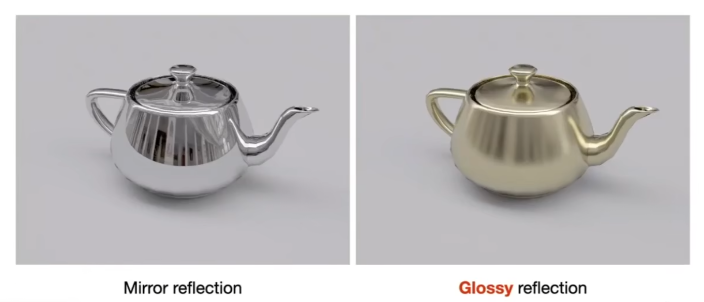
Glossy的反射内容和镜面应该不同？
同时，漫反射的物体也会反射，也会相互作用，但Whitted-Style Ray Tracing没有考虑？
路径追踪就是来改进Whitted-Style Ray Tracing的。
我们知道渲染方程是准确的。如何解？有积分，有递归。
A Simple Monte Carlo Solution:
先看积分，数值方法计算，蒙特卡洛积分。
先考虑简单场景，只考虑一个点（像素）处的渲染方程，直接光照，自身不发光。
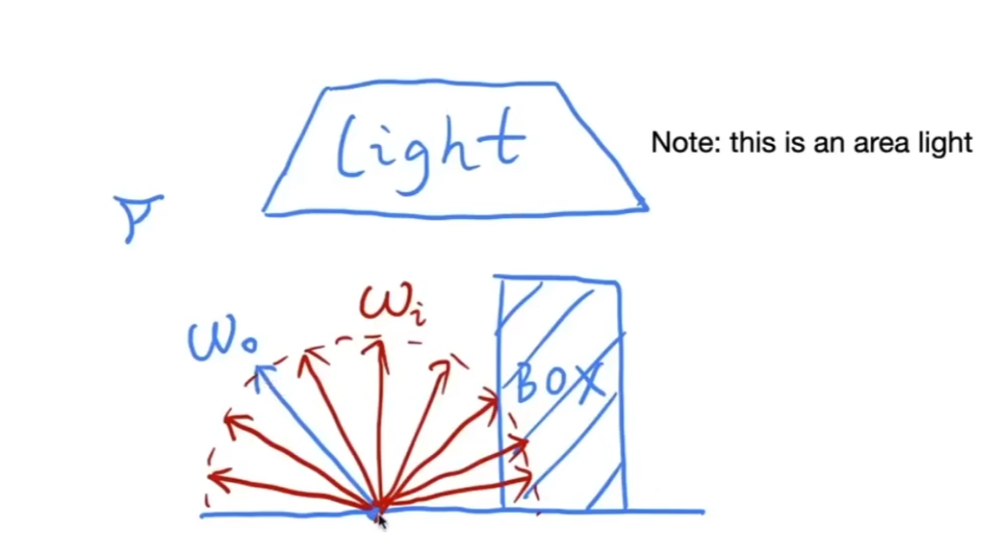
$$L_o(p,w_o)=\int_{\Omega^+}L_i(p,w_i)f_r(p,w_i,w_o)(n\cdot w_i)dw_i$$
直接光照说明$L_i$只来自光源。
这个式子实际上只是一个积分。回忆蒙特卡洛积分：
$$\int f(x)dx=\frac{1}{N}\sum\limits_{i=1}^N\frac{f(X_i)}{p(X_i)},X_i\sim p(x)$$
进行迁移：
$$f(x)=L_i(p,w_i)f_r(p,w_i,w_o)(n\cdot w_i)$$
pdf：最简单的是半球均匀采样（对入射方向采样）
$$p(w_i)=\frac{1}{2\pi}$$
所以：
$$L_o(p,w_o)\approx\frac{1}{N}\sum\limits_{i=1}^N\frac{L_i(p,w_i)f_r(p,w_i,w_o)(n\cdot w_i)}{p(w_i)}$$
这样就算好了，已经是一个算法了。
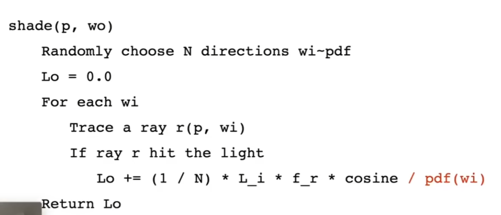
Introducing Global Illumination:
接下来引入间接光照。从$p$点回溯，如果沿着采样的方向，不是到达光源，而是到达另一个物体怎么办？
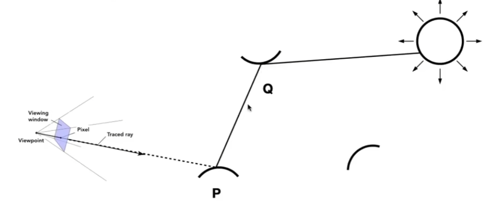
如图，例如我们研究P，采样不同方向入射到P的时候采到了来自Q的间接光照。这个时候眼睛就应该在PQ之间，要算Q在PQ方向发出的光，也就是要算光源对Q的直接光照。
算法改进：
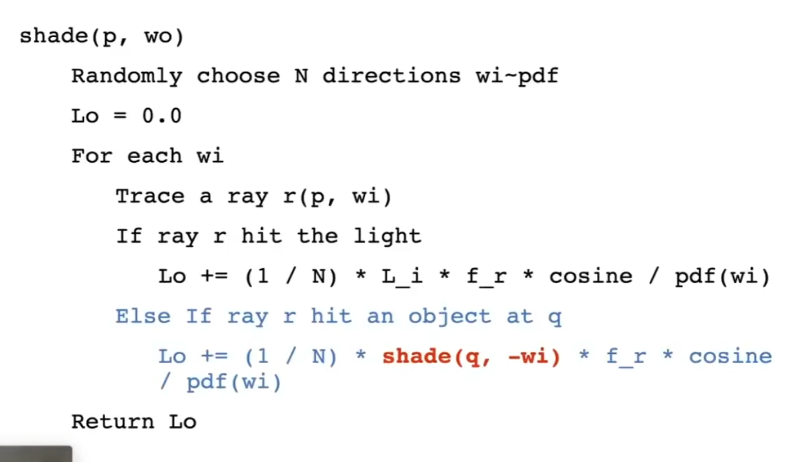
然而，问题还没有解决！
第一：这样算光线数量会指数爆炸。
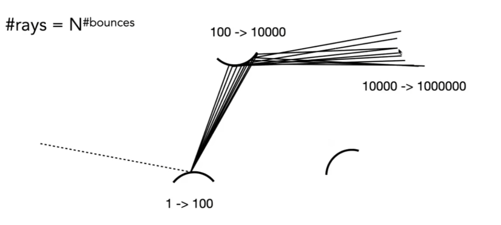
$N$等于几的时候不会爆炸？$N=1$
我在任意一个着色点只采样一次可以吗？$N=1$虽然近似不准确，但起码不会爆炸。
算法改进：
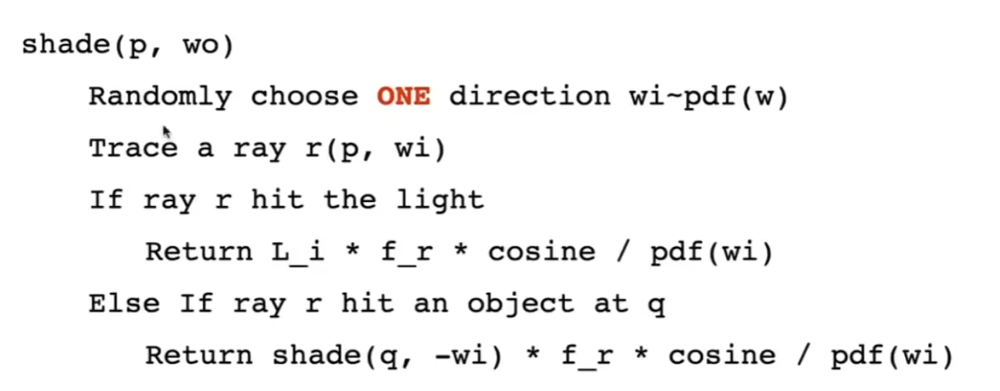
感觉会有很大的噪声，但不要紧，对于同一个像素，有无数条对应的路径，取平均就行。
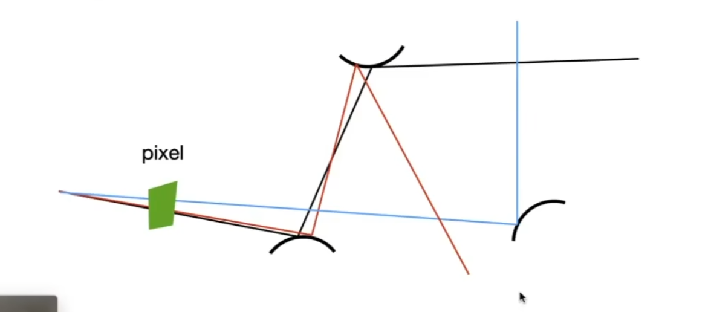
Ray Generation:
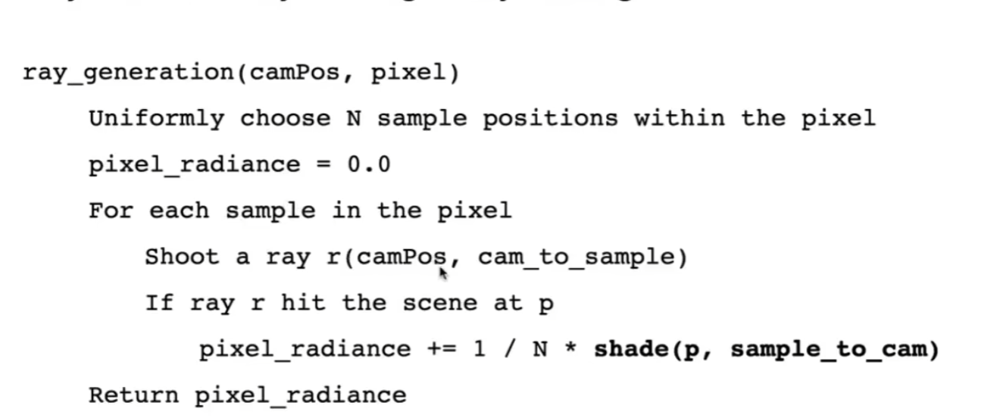
等一下，还有第二个问题！
递归没有终止条件？停不下来？
不能限制弹射次数，因为能量会损失，而真实情况就是弹射无数次，怎么办？
Solution: Russian Roulette (RR) 俄罗斯轮盘赌：
以一定的概率停止追踪。
假设概率为$P$，以一定的概率$P$射出光线，得到的结果除以$P$：$\frac{L_o}{P}$，以概率$1-P$停止追踪，得到的结果为0。
计算期望：
$$E=P\frac{L_o}{P}+(1-P)0=L_o$$
发现依然是$L_o$，因此是无偏的；同时还能有机会停下。
算法改进：
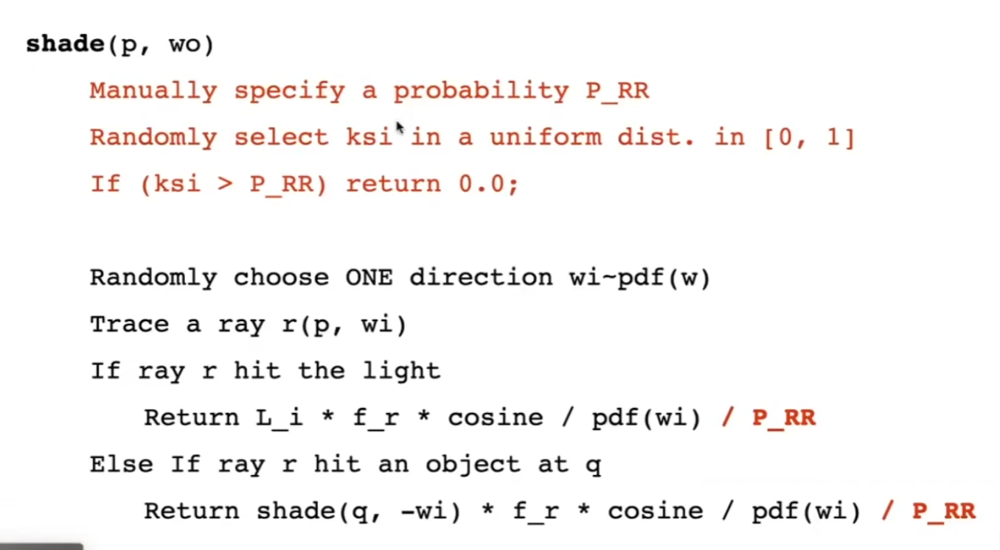
这已经是一个正确的路径追踪算法了。
小问题：并不是很高效，SPP(samples per pixel)很小的话，噪声很大。
问题出在哪儿？
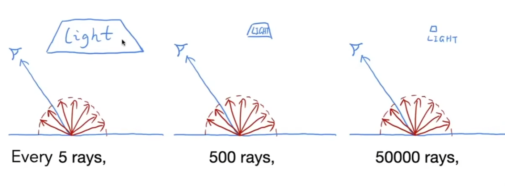
打不打得到光源完全看运气，如果光源很小，需要更多的光线才有可能采样到。有没有别的采样方法，比如更换pdf？
Sampling the Light (pure math):
对于一个着色点，我不再均匀采样，而是考虑到光源上采样。
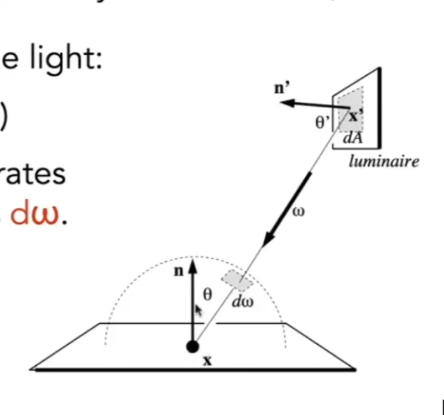
假设光源二维平面，在这个平面上均匀采样，但渲染方程似乎不是这个形式？记得吗，我们说过：对$x$采样，对$x$积分？
要重写渲染方程，写成在光源表面积分。
我们只需要知道$dw$和$dA$的关系。还记得$dw=\frac{dA_{\text{sphere}}}{r^2}$，因此：
$$dw=\frac{dA\cos\theta'}{||x'-x||^2}$$
因此重写渲染方程：
$$L_o(p,w_o)=\int_{A_{\text{light}}}L_i(x,w_i)f_r(x,w_i,w_o)\frac{\cos\theta\cos\theta'}{||x'-p||^2}dA$$
因此，我们改成：着色点的光由两部分组成：
- light source (direct, no need to have RR， 采用光源采样)
- other reflectors (indirect, with RR)
算法改进：
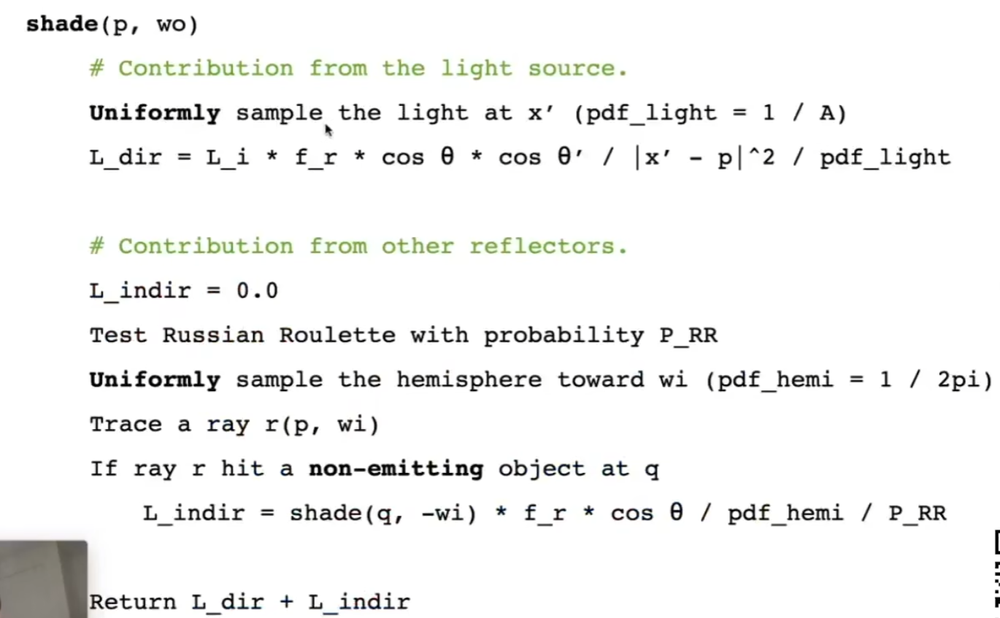
注意第二部分与原本相比if不太一样，必须要撞到其他物体而不能是光源。
还有一个问题：
对光源采样时我们完全没有考虑遮挡，我们要判断一下光线是否被其他物体遮挡。
直接连线，看会不会经过其他物体。
最后通牒：
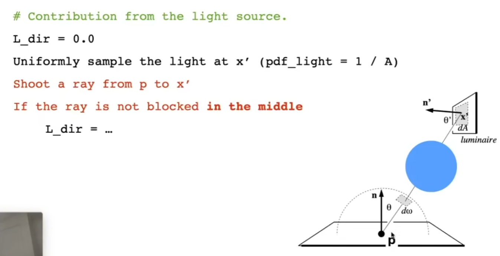
Some Side Notes:
路径追踪不太好处理点光源。
在早期：ray tracing = Whitted-Style ray tracing
在现在：所有光线传播的大集合